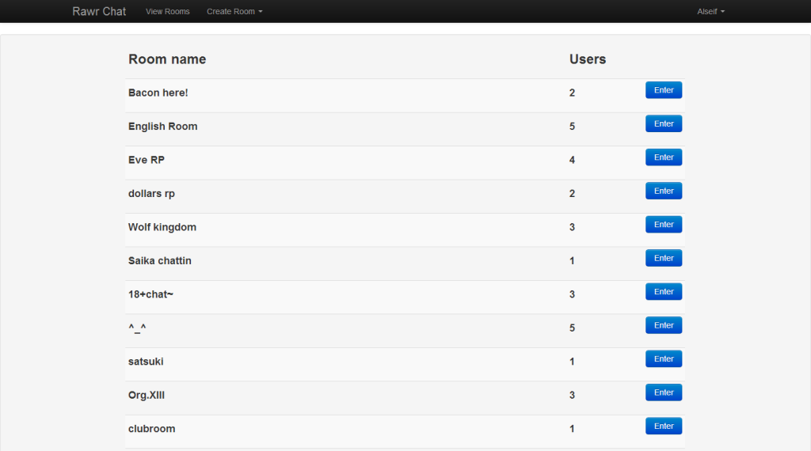

Rawr Chat Durarara webchat
-
 Chatroom screen - New messages are displayed at the top of the chat window
Chatroom screen - New messages are displayed at the top of the chat window -

Chatroom lobby - Rooms with no users are deleted after 5 minutes
-
 User settings
User settings
- Github Source
- https://github.com/AvonGenesis/rawr_chat
- Live Demo
- http://www.webchat.avongenesis.tk/
- Description
-
Rawr Chat is an webchat built using PHP and MySQL. The design for the chatroom is inspired by Durarara!! I have been working on this since June 2012 as a hobby making updates whenever I can. I really liked the design of the chatroom from the show and wanted to make it a reality. There are similar chatrooms out there that have the same design, but I built this webchat with a focus on user customization. Users are currently able to select a custom color scheme for their chat bubble and avatar background. Custom avatars is something I would like to add in the future. I currently do not have the resources to host the chatrooms for people to use daily.